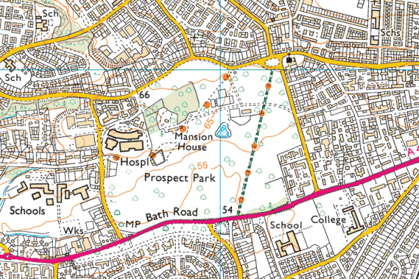

Hampshire Cross-Country League
Prospect Park, Reading

View Ordnance Survey map (using Streetmap)
Get directions (using Google Maps)
View Bird's Eye (using Bing Maps)
Sat Nav destination
Postcode: RG30 2ND
OS Grid Reference: SU692728
Parking
The main car park in Prospect Park usually gets busy and fills quickly. Bad parking then prevents people leaving.
The Harvester pub/restaurant car park should only be used if you will be a customer and go inside to register your car for free parking, otherwise you will receive a ticket!
There is additional car parking on Liebenrood Road (just outside the park) or at Kensington Road car park (RG30 2SZ), free for two hours and approximately 800m away.
Course map
Download course map (January 2016)
Directions from South avoiding Reading town centre
- At M4 junction 11 take motorway west towards Newbury
- Leave at Junction 12
- A4 towards Reading
- Prospect Park is approximately two miles on left
- Main entrance in Liebenrood Road (shared with Mansion House Restaurant)